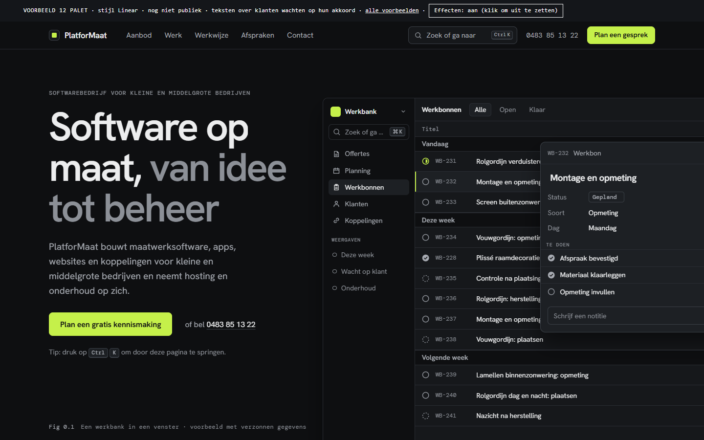
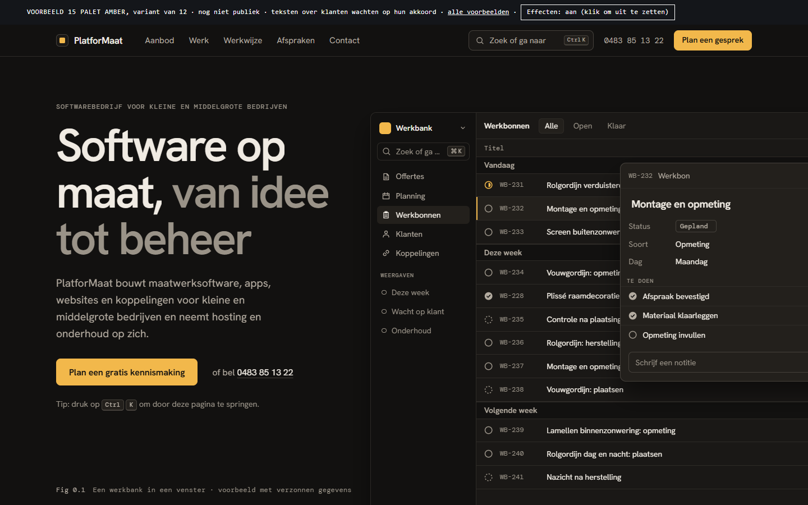
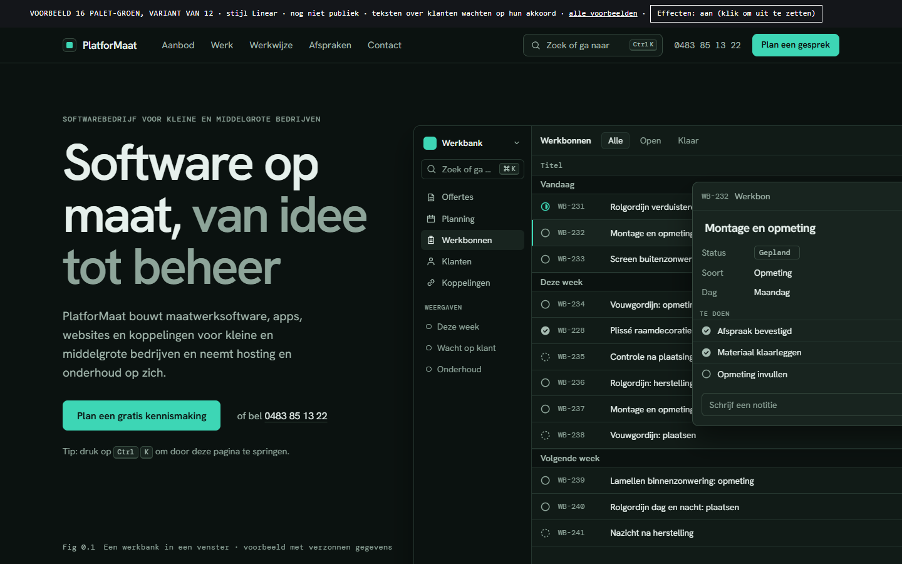
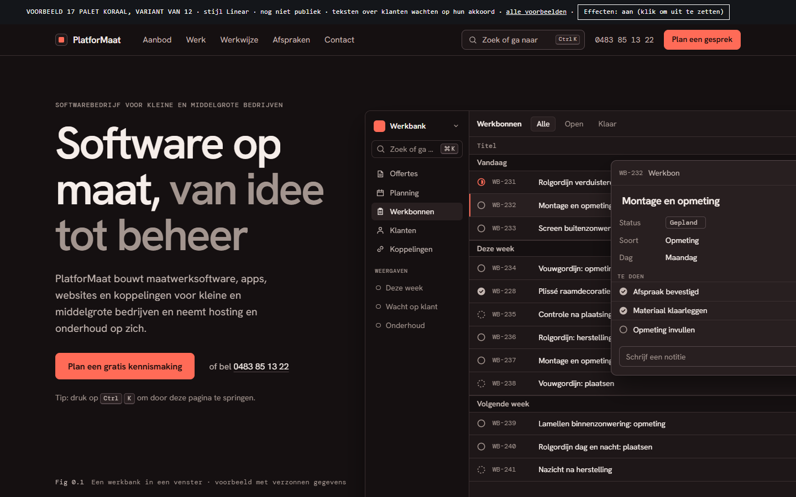
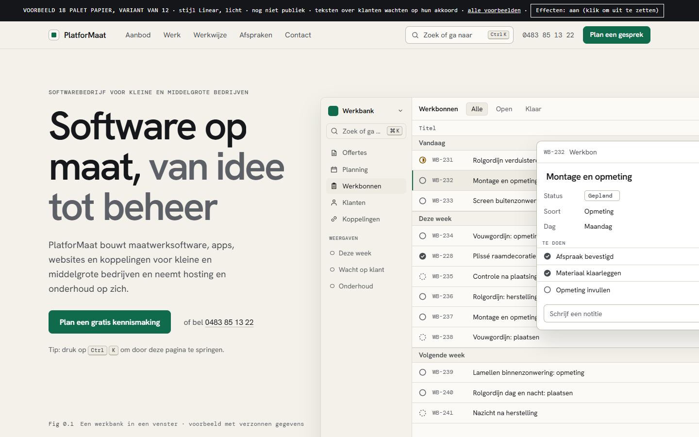

Varianten van 12
Je koos 12 Palet. Het origineel blijft zoals het is. Hieronder vier varianten met een eigen kleurenpalet en een eigen onderdeel dat reageert op de muis én op tikken (ook op gsm en op het scherm van de auto).
Tip: scroll rustig door elke variant en zoek het onderdeel dat reageert. Zie je weinig beweging? Tik bovenaan het voorbeeld op Effecten: aan.
Concept, niet publiek bedoeld. Niet indexeren.
Basis
12 Palet
Het origineel dat je koos: donker, limoen, een werkbank-app die zichzelf bedient en een commandopalet (Ctrl+K). Blijft zoals het is.

Open 12 PaletVier varianten
15 Amber · warm grafiet en amber
Beweeg over een knooppunt of tik erop: de systeemkaart toont wat met wat samenhangt.

Open 15 Amber16 Groen · diep groen-zwart en mint
Een werkbon-bord: tik of sleep een kaartje naar de volgende kolom.

Open 16 Groen17 Koraal · warm antraciet en koraal
Een koppelingsschakelaar: tik een pakket aan en zie de koppeling met de tool tekenen.

Open 17 Koraal18 Papier · licht papier en bosgroen
Een röntgenlens: beweeg of sleep over het venster en kijk door scherm, logica en gegevens.

Open 18 Papier